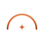
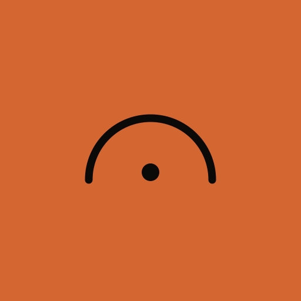
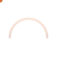

Pack de marca
Albora
44 arquivos. Duas famílias — ponto e estrela — em estáticas, animadas e ícones.
01 — Logotipo · ponto
logo-degrade-escuro.svglogo-degrade-claro.svglogo-mono-papel.svglogo-mono-tinta.svglogo-mono-ambar.svg02 — Logotipo · estrela
logo-estrela-degrade-escuro.svglogo-estrela-degrade-claro.svglogo-estrela-mono-papel.svglogo-estrela-mono-tinta.svglogo-estrela-mono-ambar.svg03 — Empilhado e descritor
logo-empilhado-escuro.svglogo-estrela-empilhado-escuro.svglogo-empilhado-claro.svglogo-estrela-empilhado-claro.svglogo-descritor-escuro.svglogo-estrela-descritor-escuro.svg04 — Símbolo · ponto
marca-degrade.svgmarca-degrade-claro.svgmarca-plana-ambar.svgmarca-plana-papel.svgmarca-plana-tinta.svgmarca-plana-brasa.svg05 — Símbolo · estrela

marca-estrela-degrade.svgmarca-estrela-degrade-claro.svgmarca-estrela-plana-ambar.svgmarca-estrela-plana-papel.svgmarca-estrela-plana-tinta.svgmarca-estrela-plana-brasa.svg06 — Ícones
icone-app-512.svgicone-app-estrela-512.svg
icone-app-invertido-512.svgfavicon.svgfavicon-mono.svg07 — Abertura · com estrela
logo-animado-estrela.svglogo-animado-estrela-claro.svgmarca-animada-estrela.svgsplash-animado.svg08 — Abertura · sem estrela
logo-animado-sem-estrela.svgmarca-animada-sem-estrela.svg09 — Carregando

loader.svgloader-mono.svgloader-progresso.svg